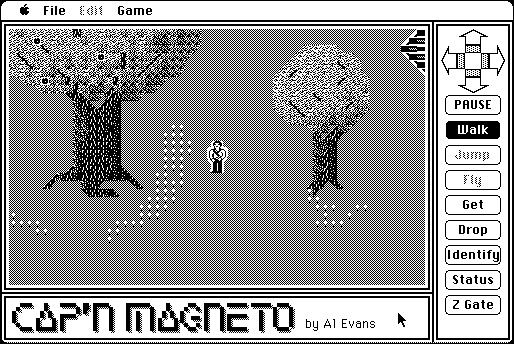

Download
CM93.zip (291K) Cap'n Magneto '93 repackaged into a zipped hfs disk image and checksum file. The disk image can be mounted with Mini vMac.
CM93.sit (270K) Cap'n Magneto '93 in the original format.
copyright: Al Evens
mod date: Jul 25, 1993
license: Freeware, former shareware
official url :
Cap'n Magneto Classic Downloads
An adventure game, the "first Interactive Animation for the Apple Macintosh", for "System 6 or 7".

Download older version that works in earlier system versions
OriginalCM.zip (127K) older Cap'n Magneto repackaged into a zipped hfs disk image and checksum file. The disk image can be mounted with Mini vMac.
OriginalCM.sit (131K) older Cap'n Magneto in the original format.
If you find these downloads useful, please consider helping the Gryphel Project, which hosts them.
Here are the md5 checksums for the downloads, signed with Gryphel Key 5:
--------- GRY SIGNED TEXT --------- 37573b0d905212a7cdfdcc12d497e908 CM93.zip 4b16700f95e568f509e6499b237dc766 CM93.sit 1b39f0eab17683a457d2b45c1f4e4939 OriginalCM.zip da6cb8f9797654672a25d75abdbb7638 OriginalCM.sit ------- BEGIN GRY SIGNATURE ------- Gry/4Xa8CFcUzxdN/IEmErEY2fr6eekg5jzr/HI3zatS9n6yvtAd8vpNI1rkpZEz L4TnCPtIzZ2g+dD5auGxWkvSbDXWNsfL6/JqdTxwx1jdSosGP1beBJWvsbrLTRs8 bur8jy7u62NV3D9yfy/JpZ5uDqks9mvFd0vbkl3zhJih2lyl0JwqQqtLi+FUbzdI -------- END GRY SIGNATURE --------